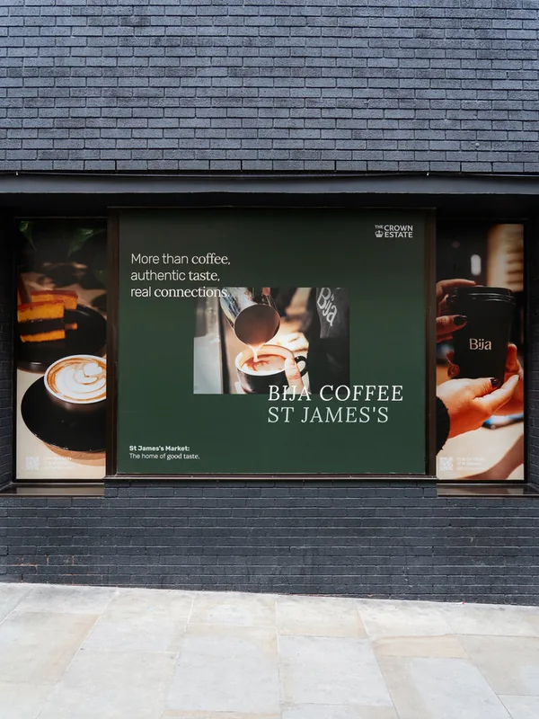
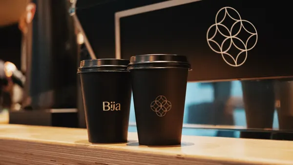

It begins with a seed.
Bija is rooted in Indonesian coffee culture. Our name, our wordmark and our Kawung symbol say the same thing three ways: good coffee can be a fresh start, and it brings people together.
A name that means seed.
Our name comes from the Sanskrit bīja, seed. Indonesia’s own dictionary, the Kamus Besar Bahasa Indonesia, gives bija as biji, benih, bibit: seed and seedling. A coffee bean holds that same promise of a fresh start, and a morning cup can lift the whole day.
The word carries other meanings across the archipelago. In Balinese Hindu practice, bija or wija are the blessed grains of rice given after prayer; in Makassarese, spoken in South Sulawesi, it speaks of family and descendants. Those meanings belong to their own cultures, and together they deepen a name that suggests growth, care and connection.

A place for conversation.
Look closely at the ij. The two letters lean towards each other like two people deep in conversation, a detail that has been part of Bija from the very first sketch.
Ngopi dulu. Coffee first.
In Indonesia, coffee often arrives with an invitation. Friends, neighbours and colleagues gather round a cup, and the conversation takes its own time. That is the welcome we brought to London.
Four equal circles.
It starts with geometry: four circles of the same radius, each touching the centre. Equal radii, a shared middle, nothing left to chance.
Petals at the heart.
Where two circles overlap, a petal forms. Four petals meet at the centre, like the palm fruit that gives Batik Kawung its shape.
Positive and negative.
Turn the drawing inside out and the outer crescents carry the weight instead. The same lines, read the other way.
A star in every circle.
Inside each circle sits a four-pointed star: four people, four directions, held together by the same ring.
The Bija Kawung.
Line weight refined, geometry kept. Four interwoven circles: our Indonesian heritage, drawn clearly enough to live on a cup.
Balance and togetherness.
Our symbol draws on Batik Kawung, a much-loved Javanese motif whose repeating shapes recall the fruit of the sugar palm. It is traditionally read as purity, perfection and a life of use to others, and also as holiness, trust and long life. We love the balance in its connected forms.
One reading links Kawung to wind, water, fire and earth, and coffee needs all four: a seed grows in soil, tended by sun and wind, before it is roasted over fire and brewed with water. Another asks us to stay connected with God, ourselves, each other and nature: values we try to live by.

More than coffee, authentic taste, real connections.
Black and white keeps the message clear. The warmth comes from the people, the light, the wood and the welcome inside.